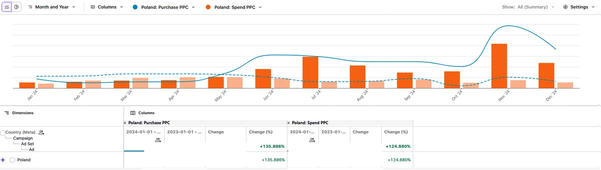
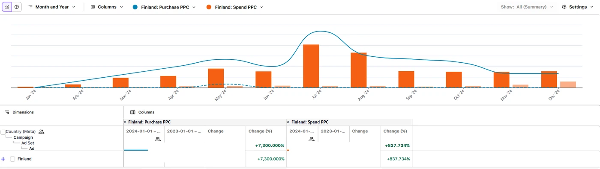
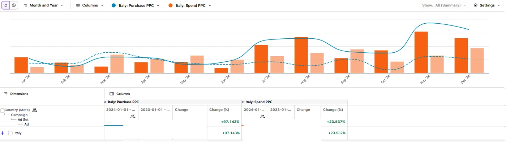
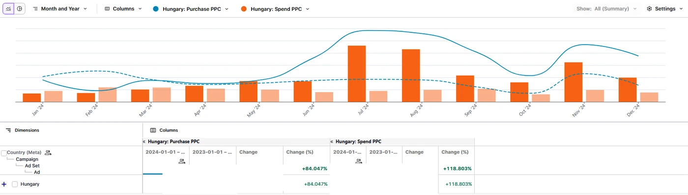
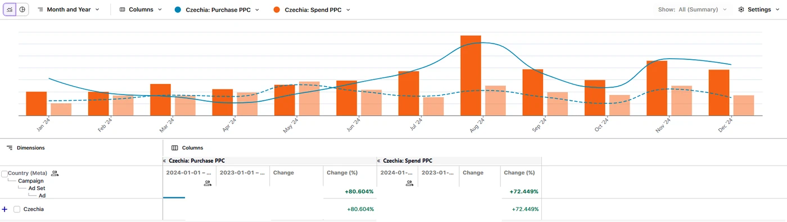
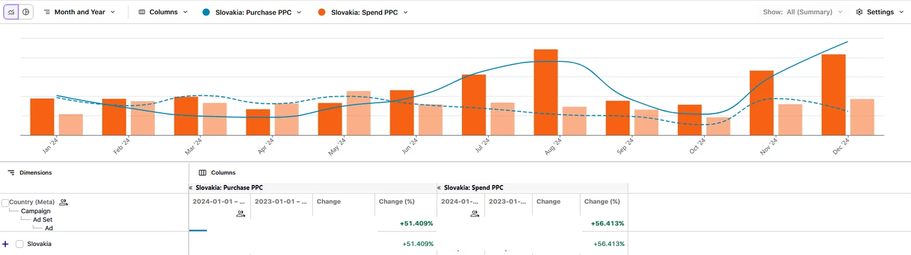
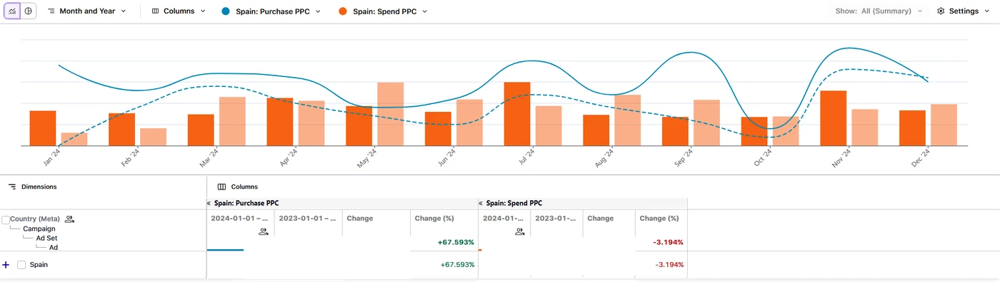
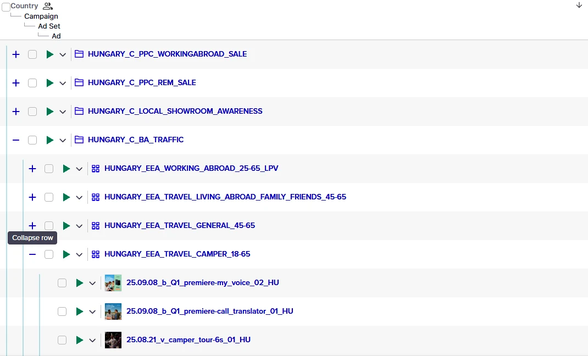
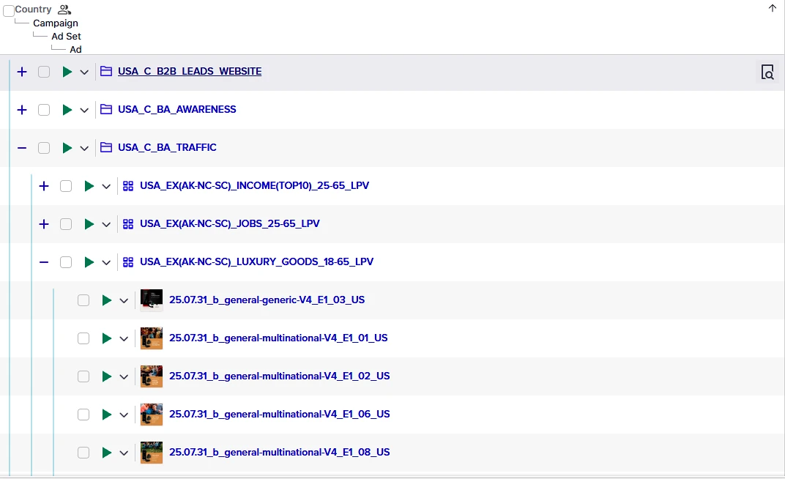

Portfolio 20 rynków zarządzane przez 2-osobowy zespół.
Vasco Electronics to producent elektronicznych tłumaczy i słowników, sprzedający na ponad 20 rynkach jednocześnie - od Polski i krajów DACH, przez Skandynawię, po USA i rynki azjatyckie. Każdy rynek to osobne konto reklamowe, inna specyfika sezonowości, inne benchmarki i inna konkurencja.
Przy zarządzaniu tak szerokim portfolio pojawił się fundamentalny problem algorytmiczny: standardowe kampanie Meta, zbudowane osobno dla każdego kraju, operowały na zbyt małych wolumenach zdarzeń, żeby algorytm mógł efektywnie się uczyć. Polska czy Niemcy radziły sobie przyzwoicie. Ale Finlandia, Węgry, Słowacja, Hiszpania? Na tych rynkach kampanie systematycznie tkwiły w trybie "learning limited".
Dlaczego Purchase nie wystarczał na małych rynkach?
Meta wymaga minimum 50 zdarzeń optymalizacyjnych tygodniowo na grupę reklam, żeby kampania wyszła z fazy nauki. Na rynkach z niskim wolumenem ruchu (Finlandia, kraje bałtyckie, mniejsze rynki EU) ta liczba Purchase eventów była nieosiągalna - szczególnie gdy część zakupów i tak przeciekała przez sklepy stacjonarne lub inne kanały.
Każdy mały rynek uczył się osobno - i żaden nie miał wystarczająco danych.
Struktura kampanii była logiczna: jedno konto per rynek, kampanie optymalizowane pod Purchase, budżety dostosowane do potencjału rynku. Problem w tym, że ta logika sprawdzała się wyłącznie na dużych rynkach z wysokim wolumenem konwersji.
Na rynkach małych i średnich algorytm Meta nie miał czego się uczyć. Kampanie wchodziły w fazę "learning limited" i tam zostawały. Próby skalowania budżetu tylko pogłębiały straty - więcej wydatków przy algorytmie działającym po omacku to więcej przepalonych pieniędzy, nie więcej sprzedaży.
Za mało Purchase eventów per rynek
Finlandia, Słowacja, Węgry - wolumeny sprzedaży były zbyt niskie, żeby kampania osiągnęła próg 50 zdarzeń tygodniowo na grupę reklam wymagany przez Meta do wyjścia z fazy nauki.
Izolacja - rynki nie "widziały" się nawzajem
Każde konto uczyło się oddzielnie. Dane z silniejszego rynku (np. Polska) nie pomagały algorytmowi na słabszym (np. Finlandia). Potencjał portfolio pozostawał niewykorzystany przez architekturę silosową.
Advantage+ nie optymalizuje per rynek - optymalizuje per persona.
Po wdrożeniu kampanii ATC w USA i obserwacji, jak zmiana zdarzenia optymalizacyjnego odblokuje skalę (opisane w osobnym case study), pojawiło się oczywiste pytanie: czy ta sama logika zadziała globalnie?
Ale był drugi poziom tej obserwacji: Advantage+ Shopping Campaigns (ASC) to format Meta, który nie jest ograniczony do jednego zestawu reklam ani jednej grupy docelowej. Algorytm sam segmentuje odbiorców, testuje kreacje i optymalizuje dystrybucję budżetu. Co ważniejsze - gdy odpowiednio skonstruowana, kampania ADV+ może agregować sygnały ponad podziałem na kraje.
Hipoteza: jeśli uruchomię kampanie ADV+ optymalizowane pod AddToCart z targetowaniem obejmującym grupę podobnych rynków - algorytm będzie miał wystarczająco sygnałów, żeby się uczyć, nawet jeśli żaden pojedynczy rynek nie generuje ich dość.
Dlaczego ATC, a nie Purchase?
Na rynkach, gdzie część sprzedaży przecieka przez Amazon, sklepy stacjonarne czy inne kanały, piksel nie widzi wszystkich transakcji. AddToCart wraca do Meta niezależnie od tego, gdzie finalnie odbywa się zakup. To zdarzenie, które istnieje w wystarczającej liczbie nawet na małych rynkach.
Ryzyko: ATC to słabszy sygnał intencji niż Purchase. Dlatego równolegle monitorowałem dane sprzedażowe klienta, żeby potwierdzić korelację między wzrostem ATC a realną sprzedażą.
Nowe kampanie ADV+ obok istniejącej struktury - nie zamiast niej.
Kluczowa decyzja: nie wyłączyłem istniejących kampanii. ADV+ z ATC uruchomiłem jako dodatkową warstwę - nowe kampanie działające równolegle, testowane przez 4-6 tygodni, zanim budżet zaczął przesuwać się w ich stronę.
Architektura wdrożenia:
Rynki pogrupowane według podobieństwa kulturowego i wolumenu: EU Zachodni, EU Wschodni, Skandynawia, USA/CA. Każda grupa jako osobna kampania ADV+ - wystarczający wolumen łączny przy zachowaniu sensu targetowania.
Optymalizacja pod AddToCart zamiast Purchase we wszystkich nowych kampaniach ADV+. To samo podejście, które sprawdziło się w USA, zastosowane do całego portfolio.
Weryfikacja wyników przez raporty sprzedażowe klienta i dane z Google Analytics 4 - żeby potwierdzić, że wzrost ATC przekłada się na realną sprzedaż, nie tylko na ruch bez intencji zakupowej.
+64% globalnie. Finlandia: +7 300%.
Vasco Electronics - Paid Social - 20+ rynków - YoY 2024 vs 2023

Efekt był widoczny przede wszystkim na rynkach, które wcześniej tkwiły w "learning limited". Finlandia wystrzelił o +7 300% - z minimalnych wyników do zauważalnego udziału w portfolio. Nie dlatego, że rynek nagle urósł, ale dlatego, że algorytm po raz pierwszy miał wystarczająco sygnałów, żeby dotrzeć do właściwych odbiorców.







ADV+ działa tylko wtedy, gdy tracking działa.
Advantage+ to format, który całkowicie oddaje kontrolę targetowania algorytmowi. To silna dźwignia - pod warunkiem, że algorytm dostaje czyste, kompletne sygnały. Jeśli tracking jest uszkodzony, ADV+ nie naprawia problemu, tylko skaluje go szybciej.
Przed wdrożeniem nowych kampanii zaudytowałem i naprawiłem konfigurację piksela, Conversions API i Server-Side Tracking na każdym rynku. Deduplikacja zdarzeń, poprawna konfiguracja iOS14 AEM, weryfikacja event match quality w Meta Events Manager - to była pierwsza warstwa, bez której reszta nie miałaby sensu.


Co to znaczy dla wielorynkowego e-commerce?
Mały rynek nie musi być skazany na "learning limited".
Jeśli wolumen Purchase eventów na pojedynczym rynku nie osiąga progu wymaganego przez Meta, zmiana formatu i zdarzenia optymalizacyjnego potrafi całkowicie odblokować skalę. ADV+ z ATC to konkretne narzędzie do tego problemu.
Grupowanie rynków zwiększa siłę sygnału.
Kampanie obejmujące podobne kulturowo rynki (np. kraje bałtyckie razem, kraje nordyckie razem) pozwalają algorytmowi uczyć się na łącznym wolumenie zdarzeń. To prostsze i szybsze niż czekanie, aż każdy rynek "urośnie" samodzielnie.
Advantage+ to dźwignia, nie substytut strategii.
ADV+ działa, gdy dostaje dobry sygnał i dobrą kreację. Jeśli tracking jest uszkodzony albo kreacje nie konwertują - ADV+ tylko szybciej przepali budżet. Wdrożenie tego formatu bez audytu fundamentów to błąd, który kosztuje.
Weryfikacja zewnętrzna jest obowiązkowa przy ATC.
Optymalizacja pod zdarzenie pośrednie wymaga zewnętrznych danych jako cross-check. Raporty sprzedażowe klienta, brand searches, dane z CRM - bez nich nie wiesz, czy przyciągasz kupujących, czy tylko ruch bez intencji.
Twoje kampanie też tkwią w "learning limited"?
Audyt analityczny i kampanii pokazuje to w ciągu kilku godzin. Wiesz, gdzie leżą przyczyny i co zmienić.